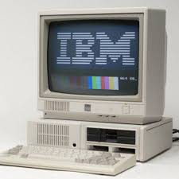
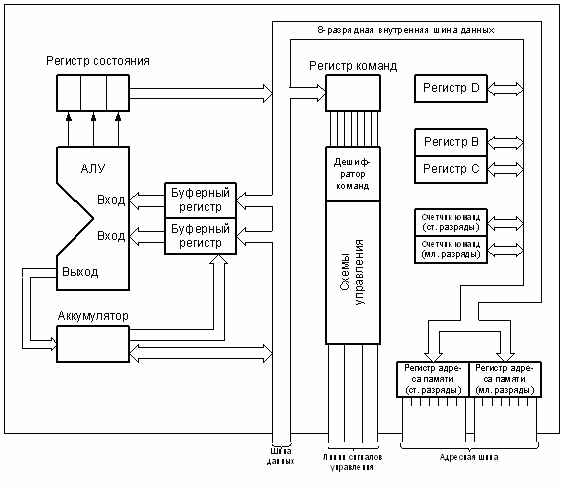

История и создание
ЭВМ четвертого поколения появились в 1970-х годах и были основаны на микропроцессорах. Эти процессоры включали в себя все основные элементы центрального процессора (ЦП), включая арифметико-логическое устройство, регистры и блок управления, на одном чипе. Разработка микропроцессоров, таких как Intel 4004 и позже Intel 8080, позволила значительно уменьшить размеры компьютеров и снизить их стоимость.
В отличие от ЭВМ третьего поколения, где использовались отдельные интегральные схемы, в ЭВМ четвертого поколения центральный процессор стал единой микросхемой, что позволило создавать более мощные и быстрые компьютеры. Одним из ярких представителей ЭВМ четвертого поколения стал персональный компьютер IBM PC, выпущенный в 1981 году.
Этот период стал важным этапом в развитии компьютерной техники, поскольку персональные компьютеры стали доступны широким слоям населения и предпринимателям, что привело к распространению вычислительных технологий в повседневную жизнь.
Как это работает: Микропроцессоры
Микропроцессор является основным элементом ЭВМ четвертого поколения. Он представляет собой интегральную схему, содержащую все компоненты, необходимые для выполнения вычислений: арифметико-логическое устройство (АЛУ), регистры, блоки управления и другие элементы, которые раньше занимали много отдельных чипов. Микропроцессоры стали возможны благодаря уменьшению размеров транзисторов и их интеграции на одном кристалле.
Микропроцессор выполняет операции, связанные с обработкой данных, управлением потоком информации и выполнением программ. Эти устройства позволили значительно повысить скорость вычислений и снизить энергопотребление.
Основные принципы работы
Микропроцессоры работают на основе тактового сигнала, который синхронизирует выполнение операций. Процессор получает данные, обрабатывает их в соответствии с программой и передает результаты. Эти операции могут включать арифметические вычисления, работу с памятью, выполнение логических операций и взаимодействие с внешними устройствами.
Микропроцессоры стали основой для создания персональных компьютеров, и именно они положили начало эпохе настольных ПК, которые стали важными инструментами в работе и обучении людей по всему миру.
Применение и наследие
ЭВМ четвертого поколения стали основой для создания персональных компьютеров и развивающихся технологий, таких как мобильные телефоны и другие устройства, которые используют микропроцессоры. Эти машины продолжали развивать вычислительную мощность и предлагали более доступные и мощные решения для широкого круга пользователей.
Влияние ЭВМ четвертого поколения не ограничивалось только компьютерами — оно затронуло все сферы жизни, включая экономику, бизнес, научные исследования и повседневную жизнь людей. Благодаря этим машинам стало возможно массовое использование вычислительных технологий в самых разных областях.